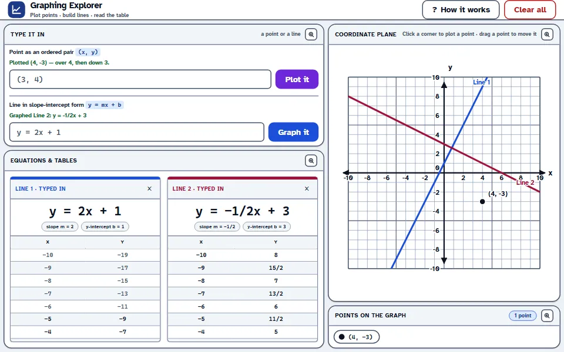
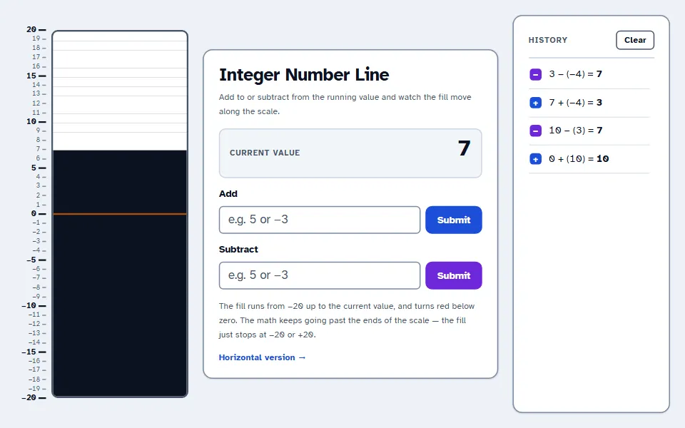
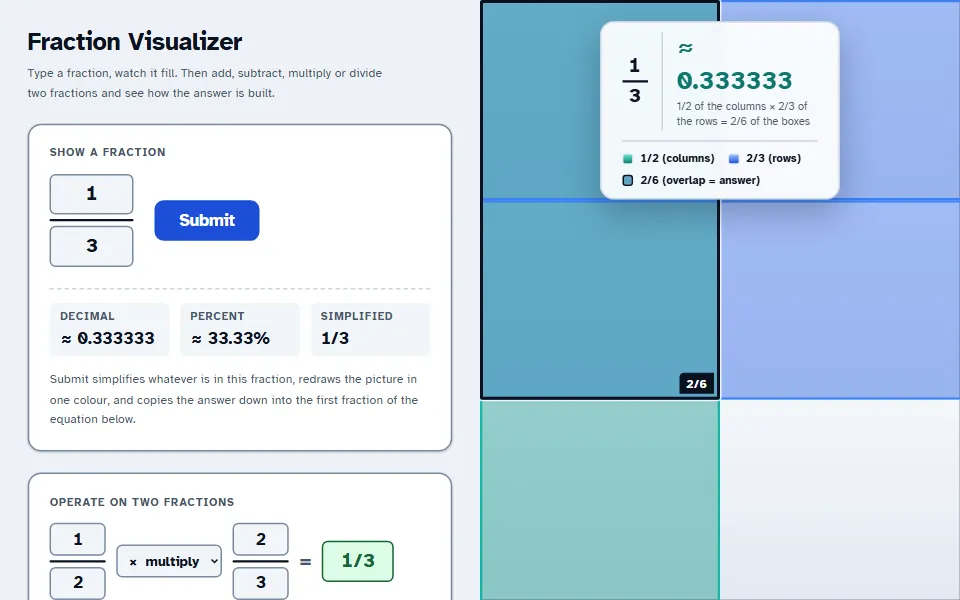
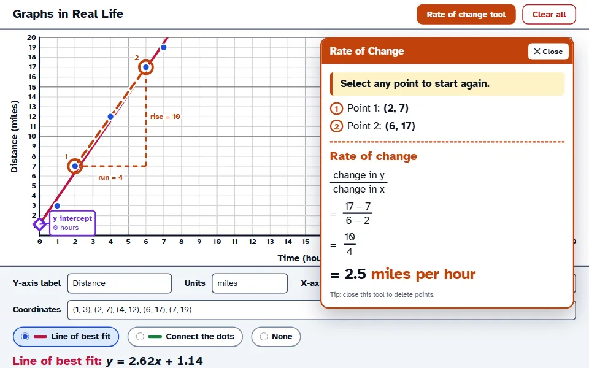
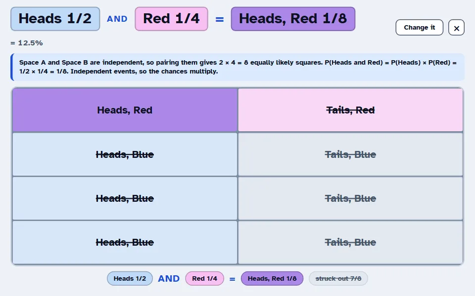
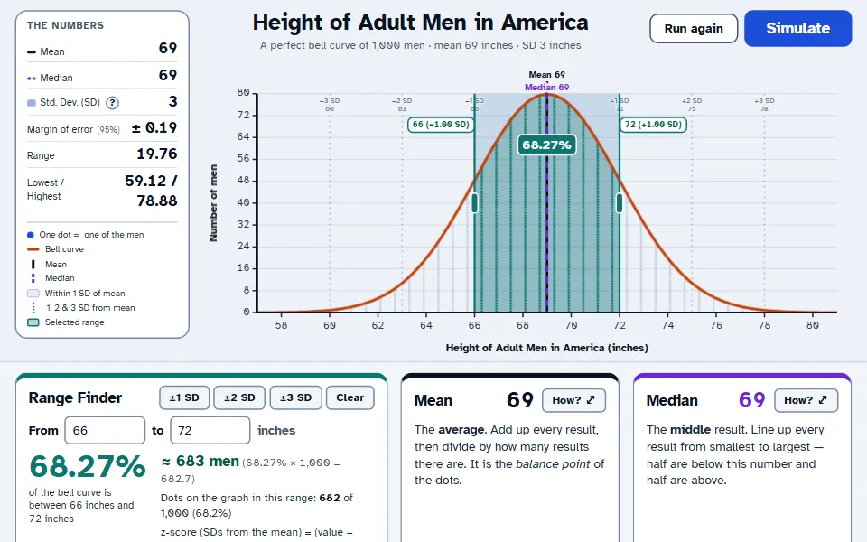

Free for every classroom
Interactive math visuals built for the projector
Free, interactive tools for math teachers: number lines, fraction models, coordinate planes, probability grids and bell curves. Every one is designed to be read from the back row of a classroom on a projector or smartboard.
- No sign-up or download
- Works on any smartboard
- Light and dark mode

The tools
Free math tools for teachers, grouped by topic
Each tool opens full screen, ready to project. Below every tool you'll find teacher notes: how to use it in a lesson, what students should notice, and the Common Core standards it supports.
Number Sense & Operations
Make integer and fraction operations visible, from adding a negative to dividing fractions.
-

Integer Number Line
Add and subtract positive and negative numbers and watch the bar rise, fall and turn red below zero. Every step is recorded as an equation.
Or open the horizontal version -

Fraction Visualizer
Fraction bars for any fraction, plus adding, subtracting, multiplying and dividing two fractions with common denominators and area models.
Algebra & Graphing
Connect points, equations and tables, and give slope a real-world meaning.
-
Graphing Explorer
A four-quadrant coordinate plane: plot ordered pairs, join two points into a line, or graph y = mx + b with a live table of values.
-

Graphs in Real Life
Label the axes with real units, plot data, and show the line of best fit, the y-intercept and the rate of change as rise over run.
Probability & Statistics
See compound probability and the normal distribution, not just the formulas.
-

Probability Manipulator
Build two probability spaces as colored grids, then multiply (AND) or add (OR) them to see the answer as one joint sample space.
-

Bell Curve Simulator
Simulate coin flips or build a perfect bell curve, then explore mean, median, standard deviation, margin of error and the 68-95-99.7 rule.
Designed for the front of the room
Made to be read from the back row
-
Large type, strong contrast
Text sits at 7:1 contrast or better, and type scales up on big screens automatically, so a washed-out projector can't fade it.
-
Light and dark mode
Switch any page to dark mode to cut the glare in a dim room. Your choice is remembered on every tool.
-
Any screen, any device
Projectors, interactive whiteboards, laptops, Chromebooks, tablets and phones. Touch targets are sized for fingers and styluses.
-
Free, with nothing to install
No accounts, no ads and no downloads. Open a link and teach. Every tool is currently free of charge.
About
A math teacher who designs for the classroom
I'm Mordechai Klein, an experienced math teacher with a background in UX/UI design. I build the visual tools I always wanted at the front of my own classroom.
Five years teaching high school taught me quickly what holds a room's attention and what doesn't. The hardest moments were rarely about the math itself. They were about seeing it: why subtracting a negative goes up, why the area model gives the product, why “or” means adding and then subtracting the overlap. A quick sketch on the whiteboard often wasn't enough.
Each tool here starts from one of those moments. Then I design it the way a UX designer would. The user is a teacher at a projector with thirty students watching, so every screen shows one idea, uses type you can read from the back row, and shows why the answer is right, not just what it is.
- Readable from the back row. Large type, thick lines, high contrast.
- One idea per screen. Nothing on the board that doesn't help.
- Shows the reasoning. The picture explains the procedure.
Questions
Frequently asked questions
Are these math tools really free?
Yes. Every tool on MathVisuals is currently free of charge for teachers, students and parents. There are no ads and no paid tiers.
The tools themselves, including their design and code, are copyright Mordechai Klein. You are welcome to use them with your classes and to share links to them, but please don’t copy, download or republish them elsewhere.
Do my students or I need an account?
No. Open the link and the tool is ready. Nothing is saved to a server, so there's no student data to worry about.
Will they work on my interactive whiteboard?
Yes. The tools run in any modern web browser, so they work on an interactive whiteboard or touch panel driven by a classroom computer, as well as on laptops, Chromebooks, tablets and phones. Buttons and points are sized for touch.
Can I share the tools with students for homework?
Of course. Share a tool's link in Google Classroom, Canvas or any learning platform. The tools work on student devices just as they do on the board.
Can you build a tool for a topic I teach?
I'd love to hear your idea. Use the form below to describe what you want students to see. Teacher suggestions decide what I build next.
Suggest a tool
What do you wish you could show your class?
Is there a concept your students struggle to picture, or a diagram you redraw on the board every year? Tell me about it. The best ideas come from teachers in the classroom, and I read every suggestion.
- Describe the moment in a lesson where a visual would help.
- I'll reply if I have questions about how you teach it.
- New tools are free for everyone, like all the others.